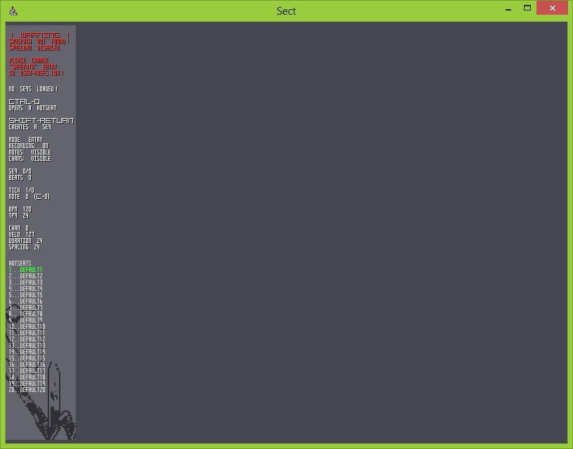
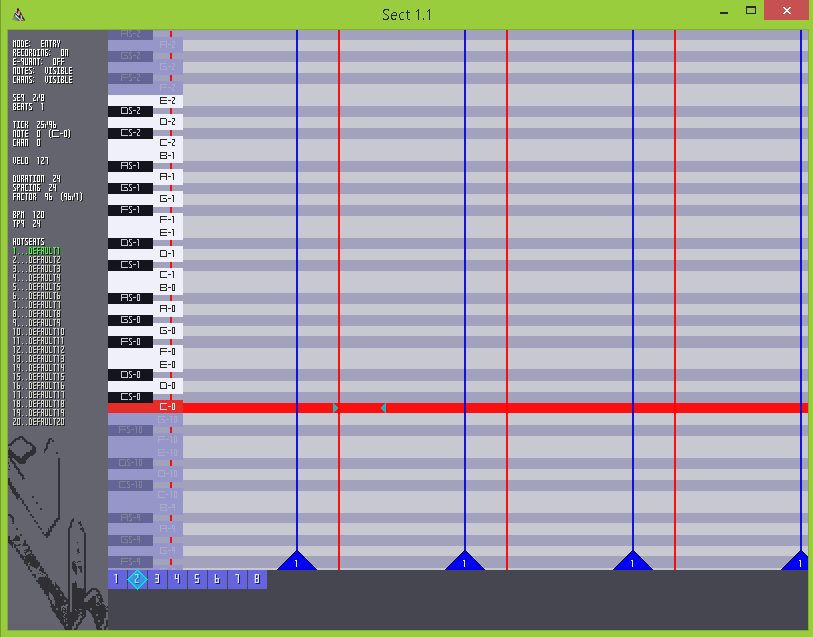
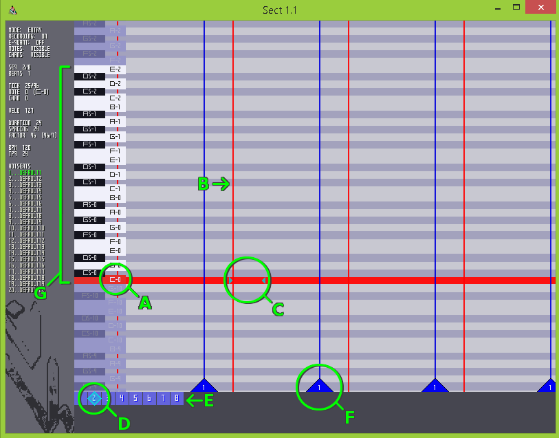
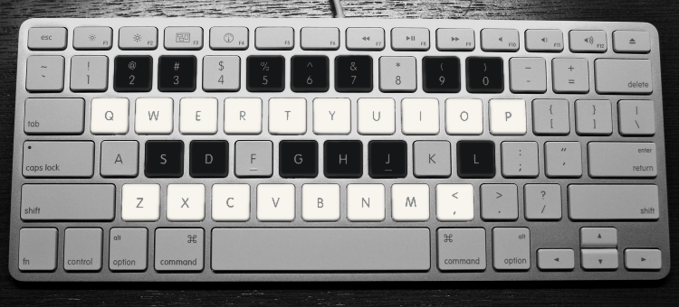
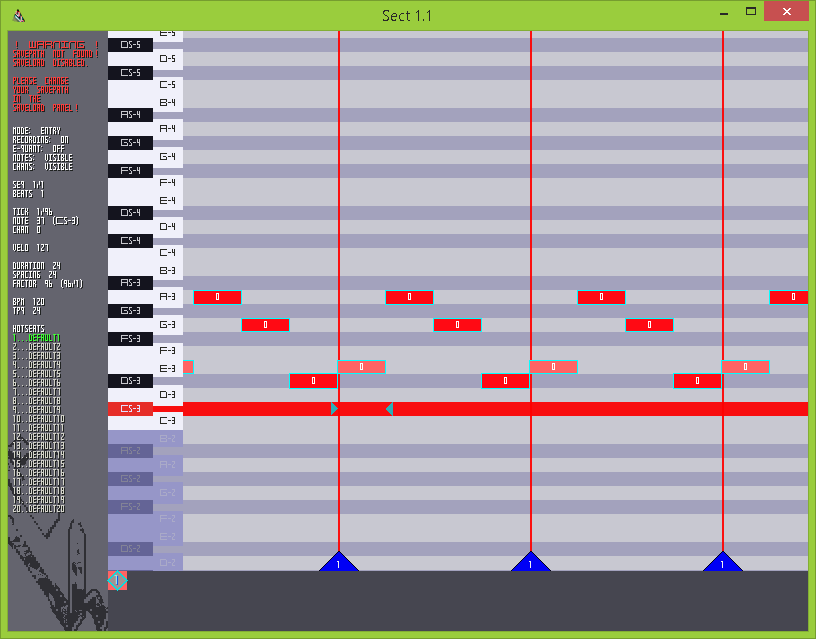
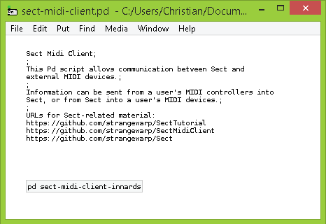

This will be a short tutorial on Sect's commands and functions.
It is designed to help users reach a point where they can use Sect for music composition.
Useful Links:
Commands List
Source Code
First, download and install LOVE2D.
Second, download and install Pd-extended.
Third, download Sect_0.1.love, and place it in whichever dir you prefer.
Finally, run Sect_0.1.love. LOVE2D ought to run it automatically as a LOVE2D application.
Some Linux distros will have problems installing Pd-extended, and/or running LOVE2D programs. This is largely uncharted territory, alas.
First, download and install Pd-extended.
Second, download Sect_0.1.app.
Finally, place Sect_0.1.app in whichever folder you prefer, and run it.
First, download and install Pd-extended.
Second, download Sect.zip.
Third, extract Sect.zip, and place its contents in whichever folder you prefer, but make sure to keep all of its EXE and DLL files in the same folder as one another.
Finally, double-click Sect_0.1.exe and run it.
You should see a loading screen as Sect generates its data files; this might take a few seconds, but it will be faster on all subsequent launches.
After the loading screen is done, this window should appear:

Success! Now let's set up the personalized settings, for save-load location and color theme.
Now that Sect has generated its data-files, we have to edit them slightly, so that Sect's internal save-load directory is correct.
Close Sect itself, and...
Go to ~/.sect, and open user-prefs.lua in a text editor.
Go to ~/Library/Application Support/sect, and open user-prefs.lua in a text editor.
Go to C:/Users/Username/AppData/Roaming/sect, and open user-prefs.lua in a text editor.
In user-prefs.lua, you can also change:
Open up Sect again.
To create a new sequence, hit Shift-Enter. This will bring up many new elements in the Sequence-Grid panel.
Without annotations:

With annotations:

A - Active note. C-0 corresponds to MIDI-NOTE 0; G-10 corresponds to MIDI-NOTE 127.
B - Active tick. A tick is a sub-unit of a beat. The default value is 24 TPQ (Ticks Per Quaver), making for 96 ticks per beat.
C - Reticule. This marks the location where the active note and the active tick meet. Its rightmost triangle, which falls to the right of circle "C" in the example image, shows how long a note would be if it were created.
The reticule's default colors are: bright aqua while recording in Play Mode; mellow blue and white when not recording in Play Mode; bright yellow when recording in Generator Mode; and dusky yellow-brown when not recording in Generator Mode. You'll learn about modes later on.
D - Active sequence.
E - List of all currently-loaded sequences. Each sequence corresponds to a MIDI track. This panel is clickable!
F - Beat-triangle. These triangles are attached to each beat-tick, and show which beat it is. Since we've just created a new sequence, all beat-triangles in the example image are labeled "1", as the new sequence is only 1 beat long.
G - Currently playable notes. These correspond to a piano-layout on the letter keys of your keyboard, and they will jump upwards or downwards depending on which octave the Reticule is in.
Here's the default layout for the keyboard-piano:

You can use these keys to enter any of the currently playable notes. Or, you can hit Enter to enter the active note.
So, let's navigate to your octave of choice with Up, Down, Shift-Up and Shift-Down, and enter some notes!

But what's this? The sequence is so short that you could only enter four notes! Well, worry not: there are commands to give you various types of control here.
First, we need to shorten those notes. Hit Ctrl-A for Select-All, then Shift-Tab-Left a few times to shorten their duration.
Okay, I lied. Use Shift-Tab-Right to lengthen them again, and Ctrl-Shift-A to clear selection.
You could make a ridiculously quick sequence by reducing Spacing (Semicolon, Apostrophe, Shift-Semicolon, Shift-Apostrophe) and Duration (Square brackets, Shift-Square brackets), or a sequence with slower notes by moving them in the other direction.
But how do we lengthen the sequence itself, to hold more notes? To add a number of ticks equal to the Spacing value, hit Tab-Enter. Note that, if you do this in the middle of a sequence that contains notes, the notes to the right of the Reticule will be pushed forward.
Change the notes' MIDI channel with Ctrl-Square brackets, their velocity with dash, equals, Shift-dash, Shift-equals, and play around putting a sequence together.
So now that we have a sequence, how do we save it?
Ctrl-S will save it to the current hotseat. You can tab between hotseats with Ctrl-number and Shift-Number, and load the hotseat-file's contents with Ctrl-O.
Remember that hotseat filenames can be changed in your user-prefs.lua.
You may have noticed that, so far, Sect is silent. Well, there's a decent way to fix this.
Because of LOVE2D' limitations, Sect cannot send MIDI directly, but there is a Puredata script to help.
Download SectTestOSCMIDI and open it in Pd-extended.

todo: Undo/Redo todo: Additive Copypaste
todo: Play Mode todo: Shadow Mode